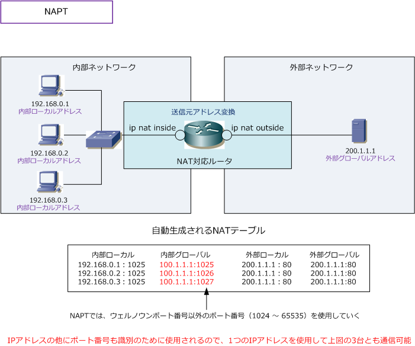
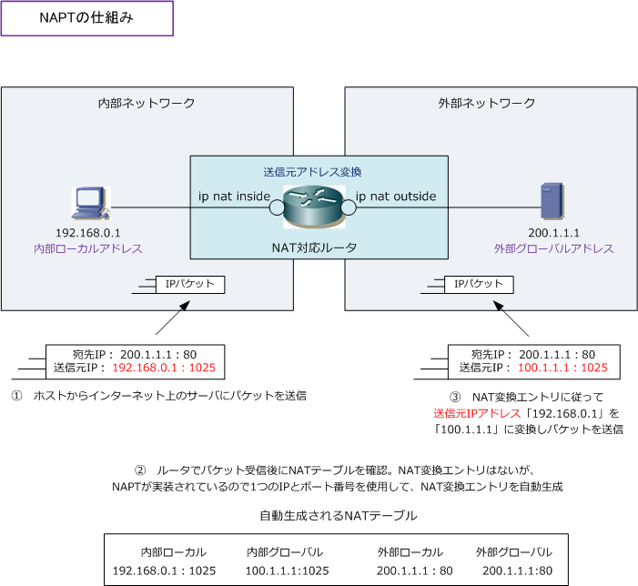
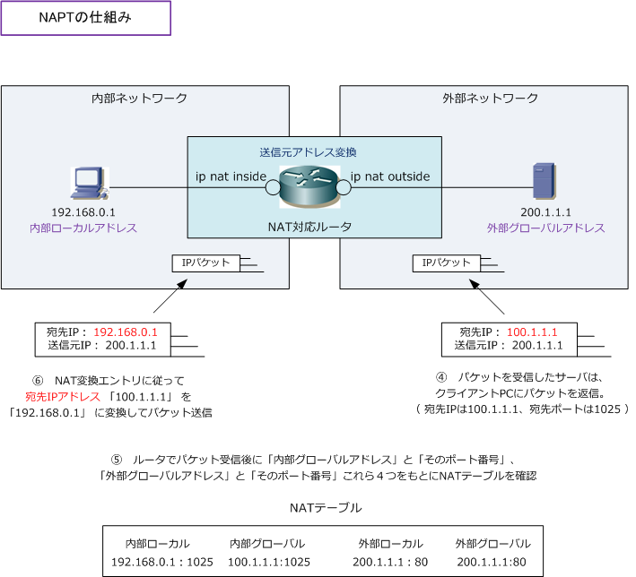

NAPT ( Network Address Port Translation )
NAPTとは
NAPT（ Network Address Port Translation ）とは、1つのIPアドレスを複数のコンピュータで共有する ためのアドレス変換技術のことです。IPアドレスの変換だけでなく、TCP/UDPのポート番号も含めて変換 することで、1つのIPアドレスを複数のコンピュータで共有することを実現しています。
IPネットワークの境界にあるルータが双方のIPアドレスとTCP/UDPポート番号を自動的に変換することで プライベートIPアドレスで通信している複数のコンピュータが内部ネットワークから、1つのグローバルIP アドレスを共有してインターネット通信できるようになります。
なお、ネットワーク機器大手のCiscoではNAPTのことをPAT（Port Address Translation）と呼んでおり、 LinuxではNAPTのことをIPマスカレードと呼んでいるので、NAPTはPATやIPマスカレードとも呼ばれます。

NATでは、スタティックNATでもダイナミックNATでもIPアドレス変換が1対1で行われるので、100台が インターネット通信を同時に行いたい場合、100個のグローバルIPアドレスが必要となります。グローバル IPアドレスが枯渇している現在では現実的な通信方式ではありません。NAPTではこの問題点を解決します。 NPATではIPアドレスの他にTCP/UDPのポート番号も動的変換し、NATテーブルに変換エントリを登録する ことで識別しています。IPが同じでも送信元ポート番号が異なるので、各通信を識別することができます。
NAPTではIPアドレス以外にポート番号もNAT変換エントリに登録しますが、NATと同じようにIPアドレスは 送信元IPアドレスを変換します。NAT変換エントリにポート番号の情報が追加される以外、NATの仕組みと ほとんど同じです。また、NAPTはNATテーブルで「外部ローカルアドレス」と「外部グローバルアドレス」 の変換エントリが表示されますが、この宛先アドレスは変換されたりしません。
NAPTの仕組み
NAPTでもNATと同様に送信元アドレスの変換を行います。また、NAT変換エントリとしてIPアドレスだけで なくてポート番号も登録します。ここでは、インターネット上のサーバはHTTPサーバであると仮定します。

NATの場合、⑤の処理が「内部グローバルアドレス」情報をもとにNATテーブルの検索を行っていましたが NAPTの場合、⑤の処理が「内部グローバルアドレス＋ポート番号」「外部グローバルアドレス＋ポート番号」 の4つの情報をもとにNATテーブル上の検索を行って、NATエントリに合致すると変換されることになります。
